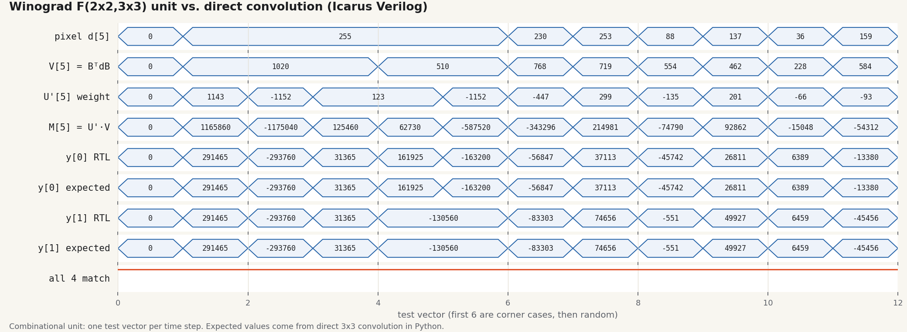

FPGA CNN Accelerator: Winograd Convolution Unit
- Winograd unit · RTL simulation passing
- Full accelerator · in progress, team project
- Synthesis & board · not yet
CEV is building an FPGA accelerator for INT8 inference on its lane-segmentation network, prototyping on MNIST first. The Winograd unit is a drop-in alternative to the direct 3×3 convolution block; it is not yet wired into the accelerator datapath.
My partThe arithmetic. I designed, wrote, and verified the Winograd F(2×2, 3×3) unit in SystemVerilog, with its testbench and Python reference model.
- 16 multiplies per 2×2 output tile instead of 36 for direct convolution; all transforms are adders. This is a multiplication count, not a measured speedup. RTL ↗
- 100,006 vectors, 0 errors in RTL simulation (100,000 random tiles plus corner cases) against a direct-convolution Python reference. testbench ↗
- Integer-only: weights use 2G, so the hardware computes exactly 4× the direct result and a 2-bit shift undoes it.

Details · supporting math, sizing, how to reproduce
Where 36 → 16 comes from
Direct 3×3 convolution needs 9 multiplies per output, so a 2×2 output tile costs 4 × 9 = 36. Winograd F(2×2, 3×3) transforms a 4×4 input tile and the 3×3 kernel into a 4×4 domain where the convolution becomes one elementwise product: (2 + 3 − 1)² = 16 multiplies, 2.25× fewer per tile. The price is adders for the input transform (Bᵀ d B) and output transform (Aᵀ m A); the kernel transform is precomputed offline.
The unit is combinational and has not been synthesized or integrated yet, so there is no clock-rate, latency, or resource number to compare against the direct block.
Bit widths
| Signal | Width |
|---|---|
| Input pixels d (4×4 tile) | 8-bit unsigned |
| Input transform Bᵀ d B | 11-bit signed |
| Transformed kernel U′ = G′ g G′ᵀ (G′ = 2G) | 12-bit signed |
| Products m = U′ ⊙ V | 23-bit signed |
| Output transform Aᵀ m A | 25-bit signed |
Output, after the exact >>> 2 | 20-bit signed |
Other sizing work for the team
- Specified INT8 math with wide accumulators and multiply-and-shift rescaling, so there are no dividers in hardware.
- Sized the target network: one 3×3 RoadSeg (ResNet-18) layer is about 1.1 B multiplies and 3.9 MB of memory per frame (hand calculation).
- Sized the MNIST prototype's block RAM at 88.5 kB and drafted the FSM that sequences its conv and pool layers.
Reproduce the simulation
From mnist/ in the repo, with Icarus Verilog 12. The vectors come from scripts/winograd_3x3_vectors.py (seed 1).
iverilog -g2012 -o winograd.vvp tb/winograd_3x3_conv_tb.sv rtl/winograd_3x3_conv.sv vvp winograd.vvp # WINOGRAD_3x3_CONV TB: PASS -- 100006 vectors, 0 errors
</> mnist/rtl/winograd_3x3_conv.sv
module winograd_3x3_conv
(
input logic [7:0] tile [0:15], // 4x4 pixels, row-major
input logic signed [11:0] u_weights [0:15], // G' g G'^T, precomputed
output logic signed [19:0] convolution [0:3] // 2x2 outputs, row-major
);
always_comb begin
// Input transform, rows: B^T d (adders only)
for (int c = 0; c < 4; c++) begin
bt[0*4+c] = d[0*4+c] - d[2*4+c];
bt[1*4+c] = d[1*4+c] + d[2*4+c];
bt[2*4+c] = d[2*4+c] - d[1*4+c];
bt[3*4+c] = d[1*4+c] - d[3*4+c];
end
// ...columns: (B^T d) B, same pattern
// The only 16 multiplies
for (int i = 0; i < 16; i++) begin
m[i] = u_weights[i] * v[i];
end
// Output transform, rows: A^T m
for (int c = 0; c < 4; c++) begin
at[0*4+c] = m[0*4+c] + m[1*4+c] + m[2*4+c];
at[1*4+c] = m[1*4+c] - m[2*4+c] - m[3*4+c];
end
// ...columns: (A^T m) A, same pattern
// U' used 2G, so y is exactly 4x the direct result
for (int i = 0; i < 4; i++) begin
convolution[i] = 20'(y[i] >>> 2);
end
end
endmodule